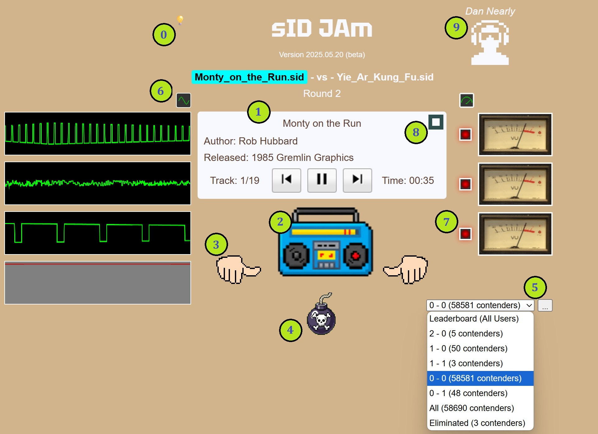

Contents:
Welcome to sID JAm!
sID JAm is a battle of the bands style C64 / SID music player that allows you to choose winners and losers from the HVSC collection in a double-elimination tournament controlled by you.
1. Player controls and Song Info: Click Play in the song info section (1) to start. Two SID files (contenders) will load, and the first contender will begin playing. You can pause, play and advance to next and previous tracks for songs that support multiple tracks. Clicking previous on track 1 will restart the song.
2. jAM Button: Click jAM (2) to switch between contenders. You can listen to contenders for as long as you like and switch between them as many times as you like.
3. Winner Buttons: Choose the contender you like best by clicking one of the two winner buttons (3). Clicking a winner button will indicate your preference, however the round is not over until you click jAM again to confirm your choice. You can click the winner button again if you change your mind.
In the 0 - 0 bracket you can choose both contenders as winners. This is to save you from having to make the heartbreaking decision of sending a legendary track to the obscurity of a 0 - 1 win/loss record. This feature is only available in the 0 - 0 bracket. In all other brackets you must choose a winner and a loser.
Click jAM with a winner selected to commit your decision and start a new bout.
4. Flame Button: Click Flame (4) to remove a defective, offensive or otherwise terrible song from play. Like the Winner buttons, your decision to flame a song does not take effect until you click jAM to confirm. The current bout will resume with a new contender in place of the eliminated track. Like the multiple winners option, the flame is only available in the 0 - 0 bracket.
5. Bracket Selector and Peek [...] button: The bracket selector (5) displays the current bracket you're in by win-loss record. You can click the dropdown to view and select other brackets. Selecting another eligible bracket immediately abandons your current bout and loads two new contenders from the bracket you select.
The bracket selector also provides these special brackets:
Special brackets are provided for your convenience and are not eligible for bouts. Clicking an special bracket has no effect on the bout in progress. Any song playing will continue. Any winner or flame choices you make will apply to the bracket you were in when you started the bout. An ineligible bracket can become eligible when additional contenders join it.
Peek Mode:
You can view the contenders in any selected bracket with the peek button [...] (5).
Peek mode allows you to navigate and filter songs in the selected bracket, including wildcards (* and ?). Clicking a song in the list will play that song in "Peek Mode". "Peek Mode" has no bearing on any win-loss selections. Closing the bracket list will return you to your previous bout.
Clicking a second time on a song playing in peek mode will take you into
Now Playing Mode:
Now Playing Mode looks and behaves similarly to bout mode with the following exceptions:
From Now Playing Mode you can freely select other brackets to peek and play additional songs on-demand.
Revive: Playing an eliminated song in now playing mode will provide a revive button in place of the flame.
While the goal of sID JAm is to judge songs in a battle of the bands style tournament structure, these extra accommodations for flame, revive and multiple winners in the 0 - 0 bracket are there to help make your curation experience casual and fun.
Clicking jAM in Now Playing mode will return you to bout mode.
sID JAm is a free to use passion project for SID music enthusiasts. Registration requires only a valid e-mail address. A simple browser signature is used to help persist your experience prior to registration, for a low barrier to entry, and to simplify sign in for quick and easy future access.
sID JAm does not conduct browser tracking across any other applications or sites. Apart from the optional browser signature, your e-mail, chosen username, win/loss song selections and other application preferences, no data is collected nor used in any way outside of the sID JAm experience.
sID JAm encrypts user passwords and stores all data securely.
You can delete your account at any time.
sID JAm uses the webSID emulator by Juergen Wothke (https://www.wothke.ch/websid/). Many thanks go to Juergen for his gracious assistance integrating with his incredible webSID emulator!.
sID JAm was created with a ton of help from large language AI models including Grok 3, Meta.ai (Llama 3.1) and Gemini (2.5 Flash and Pro).
sID JAm uses the HVSC Music collection (version #82 from 2024 December).
Contact: jguinn@bonevalleyfilms.com
We hope you enjoy sID JAm!